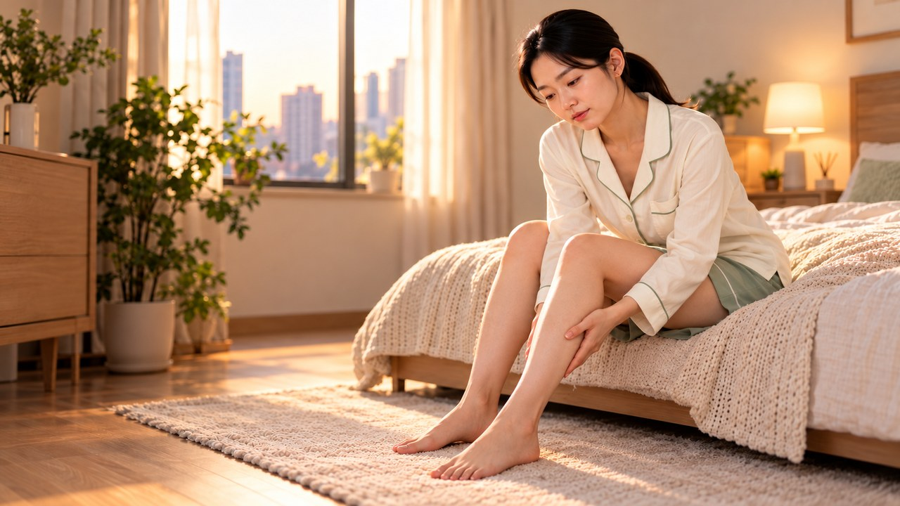
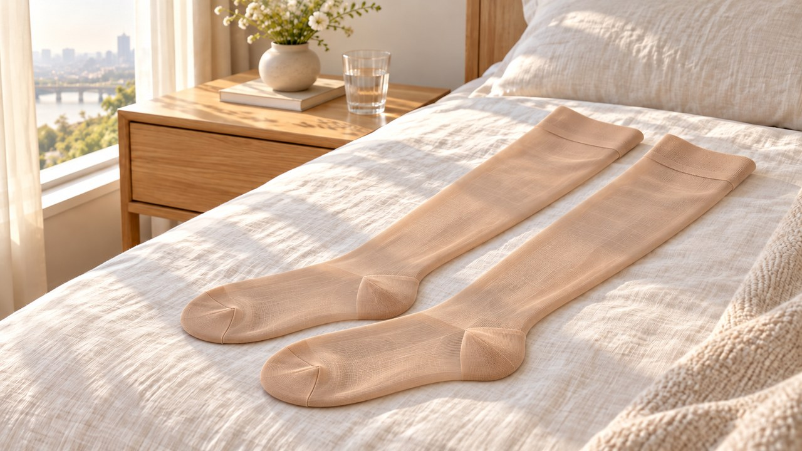
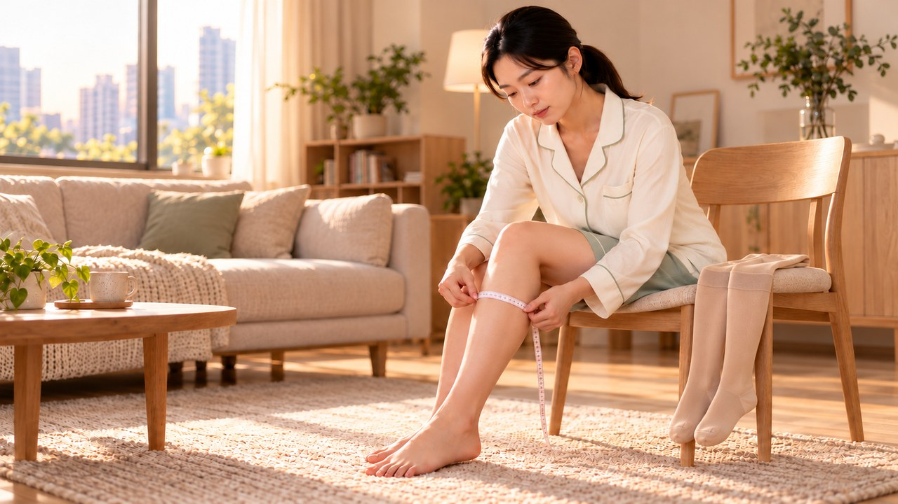
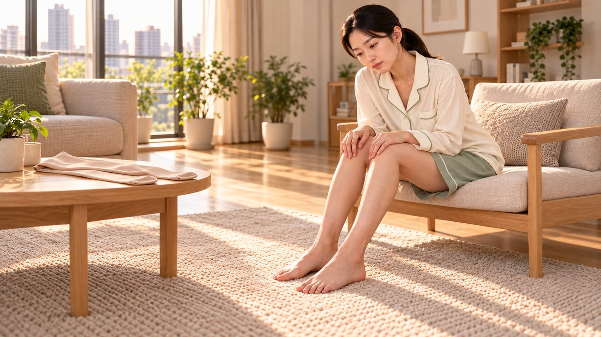

압박스타킹 착용 시간과 다리쥐나는이유, 저녁 대신 아침 기상 직후 신어야 하는 까닭
퇴근길만 되면 구두나 운동화가 꽉 조이고
종아리가 묵직하게 부어오른 날 있으시죠?
새벽에 갑자기 불거진 종아리 경련 때문에
잠을 설친 분들도 참 많으실 텐데요.
붓기를 빨리 가라앉히고 싶은 마음에
저녁에 집에 와서야 스타킹을 찾아 신거나,
아예 밤새 신고 주무시는 경우가 흔하지만
오히려 다리 순환을 방해할 수 있답니다.
발목 100 · 무릎 70 · 허벅지 40 퍼센트 단계 압력 비율과
아침 기상 직후 착용 및 취침 전 탈의 수칙을
오늘 에디터 혀니와 함께 편하게 짚어볼게요!

| 밤마다 다리 쥐 나는 판막의 비밀

우리 다리 속 정맥은 발끝에서 심장 쪽으로
중력을 거슬러 피를 올려보내야 하는데요.
걸을 때마다 움직이는 종아리 근육이 밀어 올리고
혈관 안쪽의 얇은 판막이 역류를 막아준답니다.
하지만 오랜 시간 같은 자세로 서 있거나 앉아 있으면
종아리 근육의 펌프 움직임이 둔해지게 되거든요.
여기에 40~50대 이후 나이나 20~50%의 가족력 등이 겹치면
판막이 느슨해지면서 피가 아래로 고이게 됩니다.
처음에는 성인 여성 절반가량에서 보이는 붉고 푸른
거미모양 실핏줄이 피부 표면 가까이에 비치면서,
저녁마다 다리가 무겁고 타는 듯이 쑤시거나
자다가 종아리 쥐가 나는 야간 경련이 찾아오는 거랍니다.

| 아침 착용 원칙과 3단계 압력

그렇다면 언제 신어야 제대로 도움을 받을 수 있을까요?
핵심은 하체가 붓기 전인 이른 아침에 먼저 챙겨 신고
별도 안내가 없다면 저녁 취침 전에는 벗어두는 것입니다.
밤새 자리에 누워 쉬는 동안에는 심장과 발끝 높이가 비슷해져
아래쪽에 몰려 있던 수분과 피가 자연스레 위쪽으로 돌아가거든요.
그래서 아침에 눈을 뜨고 침대에서 발을 내딛기 전이
하루 중 다리 부기가 유독 적은 골든타임이랍니다.
이때 챙겨야 할 한 가지가 바로 주름인데요!
발목이나 오금 쪽이 접히면 압력 배분이 거꾸로 뒤집혀서
접힌 선 아래쪽 발목이 고무줄로 묶인 듯 훨씬 더 부어오릅니다.


또 하나, 종아리 전체를 일률적으로 조이는 일반 패션용과 달리
단계 압박 규격은 아래에서 위로 올라갈수록 조임이 완만해집니다.
심장에서 먼 발목 압박 강도를 100으로 잡았을 때
무릎은 70%, 허벅지는 40% 수준으로 나뉘어 짜여 있답니다.
내 혈관 컨디션에 맞춰 압력 수치(mmHg)도 다르게 골라야 하는데요.
붉고 푸른 실핏줄이나 가벼운 다리 피로는 15~20 mmHg,
3~4 mm 이상 불거진 정맥이나 임신 중에는 20~30 mmHg를 씁니다.
오래된 판막 기능 저하가 깊어진 경우라면
30~40 mmHg 고압력 단계를 다리 둘레에 맞춰 신어주어야 합니다.
저녁에 귀가해 더 이상 서 있지 않을 때는 스타킹을 벗어주시고요.
밤에 쉴 때는 신고 자는 대신 푹신한 베개 2~3개를 발밑에 받쳐
하체를 가슴 높이보다 살짝 올려두는 방법이 훨씬 편안하답니다.
낮에도 최소 30분에서 1시간 간격으로 발끝을 당기며
종아리 근육을 움직여주면 한결 가벼워지는 걸 느끼실 거예요.

| 무작정 조이면 위험한 다리 신호

하체 부기가 있다고 해서 누구나 바로 조이면 안 되는 상황도 있어요.
첫째는 정맥혈이 발등→발목→종아리→허벅지 방향으로 흐르다 막혀
막힌 부위 아래쪽의 한쪽 다리에 부기와 통증이 생기는 경우입니다.
국내에서도 인구 10만 명당 연간 53.7건(약 54건)으로 늘어난
심부 정맥 혈전증 징후일 수 있어 세심하게 살펴야 하는데요.
오금 위쪽 깊은 피떡이 방치되면 15~50%에서 폐혈관으로 넘어갈 수 있어
급성기 심한 부기 때는 다리를 높여 안정을 취하고,
3~6개월간의 항응고 관리 후 급성 부기가 빠진 뒤 착용을 권장합니다.
둘째는 일정 거리를 걸을 때 종아리가 뻐근하다가 쉬면 가라앉는
말초동맥 혈행 이상 징후가 동반될 때인데요.
5~10분간 누워 안정한 뒤 잰 발목상완지수(ABI)는 국내 기준 0.85 미만일 때
동맥 협착 여부를 살피며(정상 0.9~1.3, 국제 기준 0.90 이하 비정상),
이러한 동맥혈행장애 상태에서 조이면 좁아진 피 흐름이 막힐 수 있답니다.
신고 나서 발끝이 유독 시리거나 저리고 창백해진다면
지체 없이 벗고 초음파와 혈류 점검을 먼저 받아보세요.
오늘 밤부터는 답답하게 스타킹을 신고 주무시는 대신,
침대 발치에 베개 2~3개를 나란히 포개어 발을 올려두고
내일 아침 일어나자마자 주름 없이 펴서 신어보시면 좋겠습니다.
여러분은 평소 다리가 부을 때 저녁에 스타킹을 찾으셨나요,
아니면 내일 아침부터 기상 직후 착용과 밤 베개 받치기를 해주시겠어요?
평소 겪으신 다리 고민을 댓글로 편하게 남겨주세요 😊

(혀니의 꿀단지 지난 글에서 함께 읽어보세요!)
1. 국가건강정보포털 (KDCA) — 하지정맥류: 정맥 판막 기전 및 단계별 압박(발목 100·무릎 70%·허벅지 40%, 15~20·20~30·30~40 mmHg) 수칙 (cntnts_sn=5687)
2. 국가건강정보포털 (KDCA) — 심부 정맥 혈전증: 국내 연간 발생 추이(10만 명당 53.7건) 및 비대칭 부종 관리 기준 (cntnts_sn=5854)
3. 국가건강정보포털 (KDCA) — 말초동맥 상태 발목상완지수(ABI 0.85 미만 판별, 정상 0.9~1.3) 기준 (cntnts_sn=6774)
4. 식품안전 당국 (MFDS) 안전성 정보 — 압박용밴드 중증 동맥혈행장애 주의 알림 (seq=302)
#압박스타킹 #압박스타킹착용시간 #다리쥐나는이유 #단계별압박스타킹 #종아리부종 #하지정맥류초기 #다리붓기빼기 #자다가다리쥐 #종아리압박밴드 #하체혈액순환 #에디터혀니 #혀니의꿀단지